Alice in WonderlanD Cookies
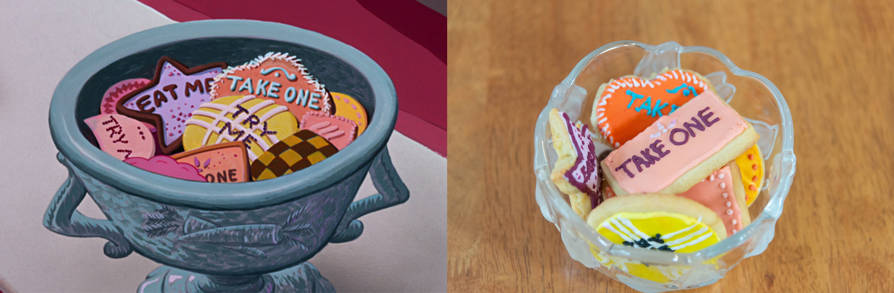
Ingredients
Sugar Cookies
- 227g butter (room temperature)
- 3 cups plain flour
- Pinch of salt
- 1 tsp baking soda
- 1 cup white sugar
- 2 large eggs
- 2 tsp vanilla extract
Checkboard Cookies
- 2 tsp cocoa powder
- 1 egg
- 1 tbsp water
Royal Icing
- 2 large egg white (room temperature)
- 2 tsp lemon juice
- 3 cups sifted icing sugar
- Food colouring
- Milk
Method
- In an electric mixer, beat together the butter and sugar till light and fluffy.
- Add in the eggs and vanilla extract and beat until combined.
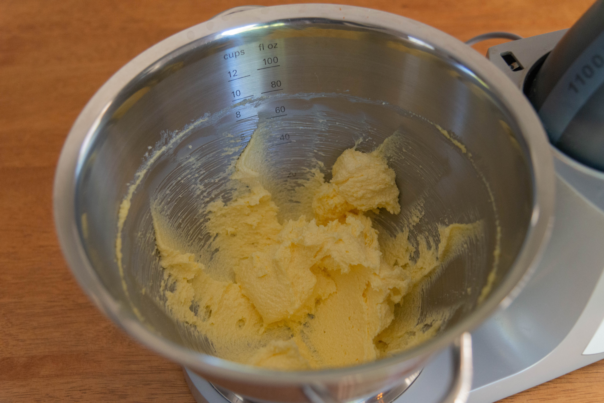
- Then add in the flour, baking soda and salt mixing till it creates a dough.
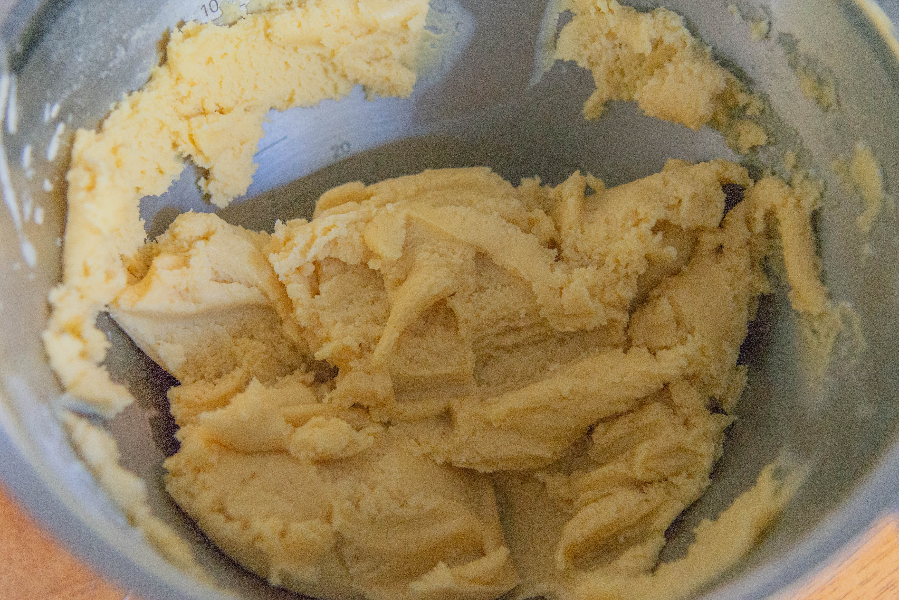
- Take all the dough out of the mixing bowl execpt about 1/2 a cup and put it aside.
- With the left over dough that will be used for the checkboard cookies add 2 heaped tsp of cocoa powder and mix until combined.
- Wrap both doughs in cling wrap separetly, and refrigerate for 1 hour.
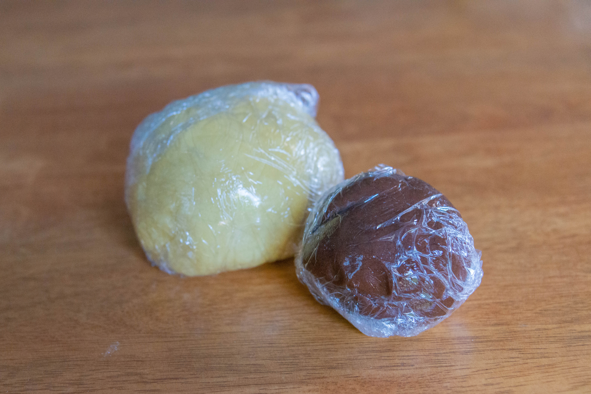
- Once chilled, preheat your oven to 180 degrees celsius.
- Bring out the dough, and take off another 1/2 cup of light-coloured dough for the checkerboard cookies and set aside.
- With the remainder dough, roll it out to about 1 cm thick and cut out the shapes.
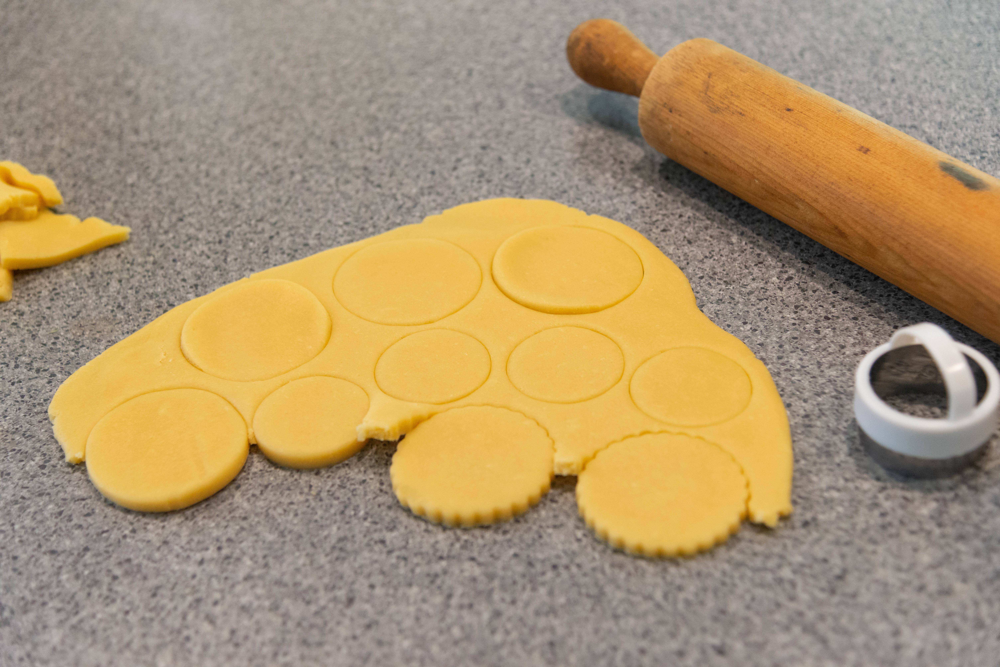
- Tansfer to a baking tray and bake for 8-10 minutes or until golden brown.
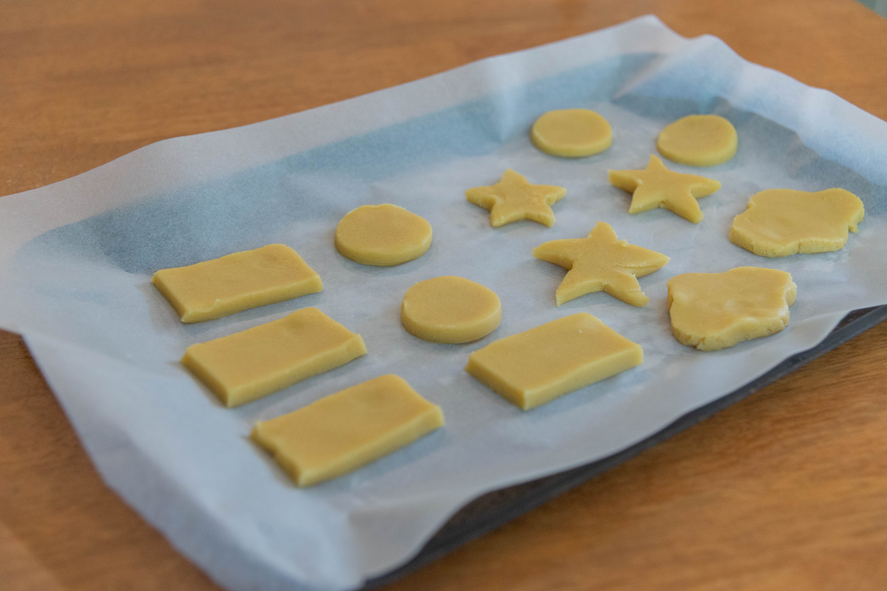
- To make the checkboard cookies, roll out both the light-coloured and chocolate dough till they are about 1 inch thick.
- Cut into long strips around 1 inch wide.
- Whisk together the egg and water to create an egg wash.
- Wipe down the edges of the dough with the egg wash, and alternate the chocolate and light-coloured dough strips, pressing them together so they stick. On the bottom layer, alternate light, chocolate, light. On the next layer- chocolate, light, chocolate and on the top layer-light, chocolate, light.
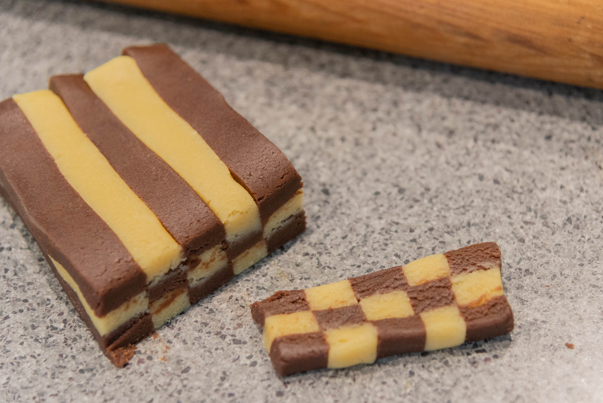
- Tansfer to a baking tray and bake for 8-10 minutes or until golden brown.
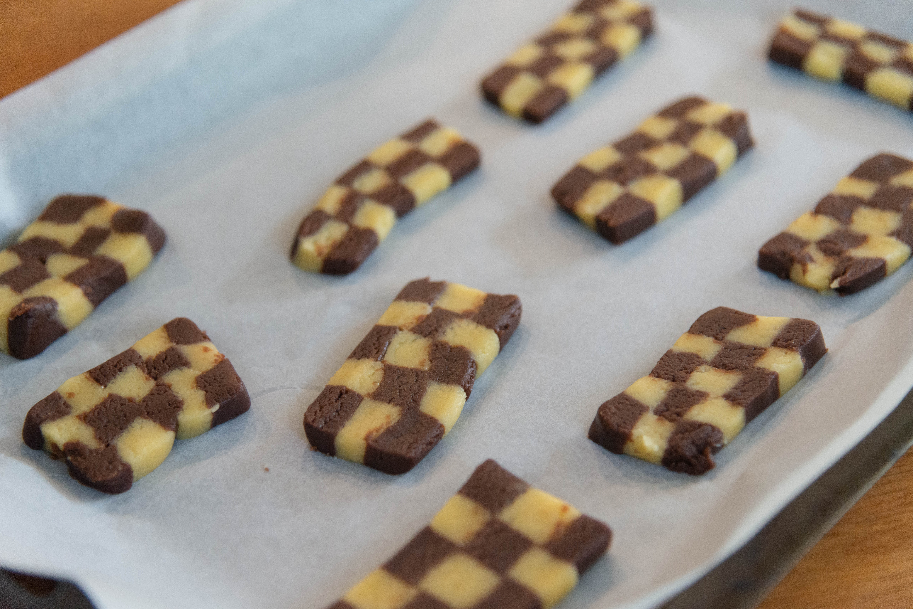
- Once the cookies have finished baking set them on a cooing rack and allow to cool.
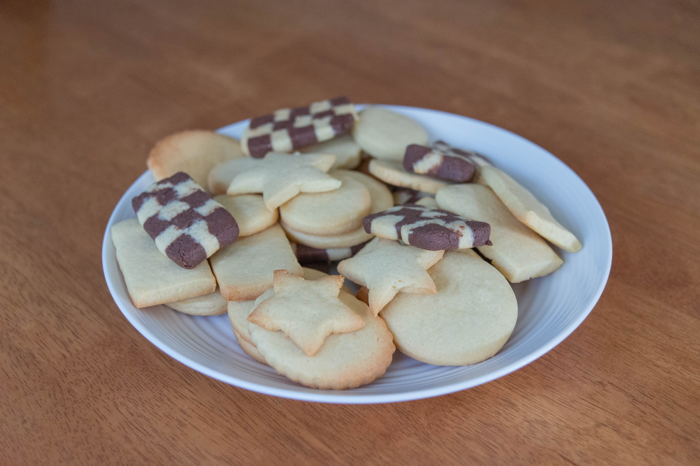
- To make the royal icing, combine the egg whites and lemon juice mixing till light and airy.
- Bit by bit add the icing sugar untill all combined.
- Divide the icing into seperate bowls and add the colours you want.
- Put the different coloured icing into seperate icing bags and snip a tiny bit off the end.
- Use this to pipe the icing around the edges of the cookies and allow to dry.
- Add a tsp of milk to the colouredicing and mix it in to make the icing runnier.
- Using the piping bag, fill the cookie to the edges with icing and let dry.
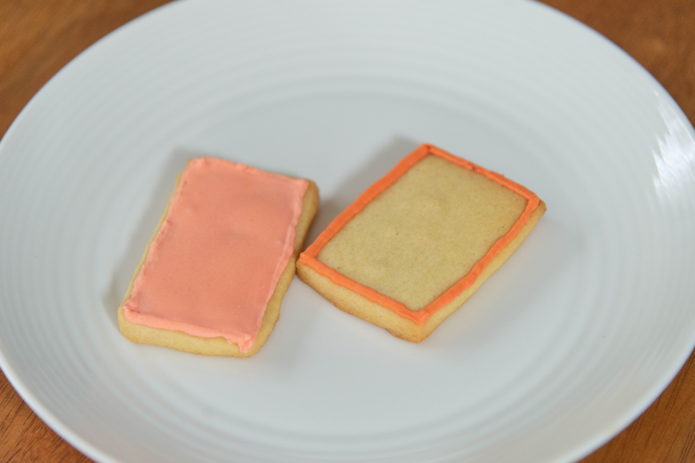
- Use the thicker icing to add the extra details on top and allow to dry.
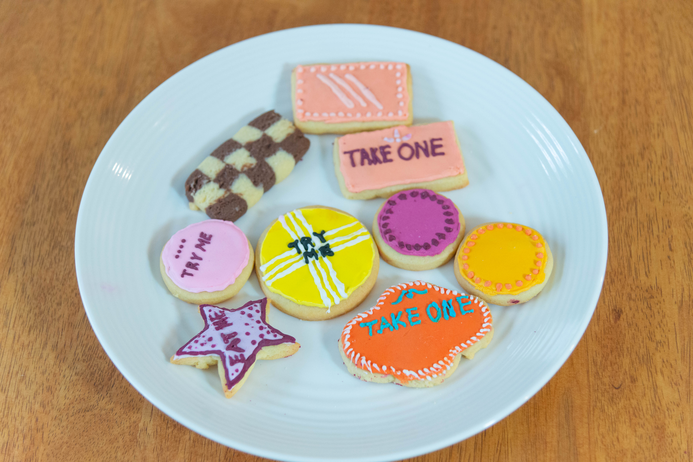